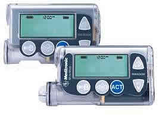
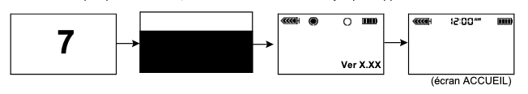
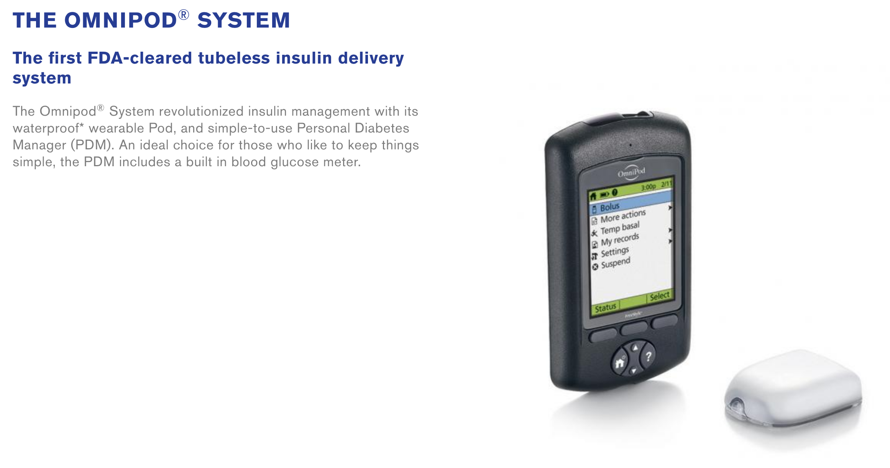

Pompe insuline Medtronic

Il y a un certain nombre de pompes Medtronic fabriquées entre 2006 - 2012 qui sont compatible avec Loop. La compatibilité a deux conditions : (1) le modèle de la pompe et (2) le firmware.
POMPES MEDTRONIC COMPATIBLES AVEC LOOP : les pompes de la série de 515 / 715 et 522 / 722 sont toutes compatibles. Les pompes 523 / 723 et 544 / 744 vous requerront de vérifier le firmware pour voir si la pompe est compatible avec Loop ou non. Voir les notes 3 et 4 en bas de page pour les conditions.
POMPES NON COMPATIBLE AVEC LOOP : les pompes Medtronic de la série de 515 / 712, 551, 751, et la série 600 ne sont pas compatible avec Loop. Les marques Animas, T-slim, Dana-RS, Roche Combo et toute autre pompe à laquelle vous pourrez penser ne sont pas non plus compatibles (sauf Omnipod).
| Pompe insuline | |||||
|---|---|---|---|---|---|
| MM 515 / 715 | MM 522 / 722 (2) | MM 523 / 723 (3) | MM 554 / 754 (4) | ||
| CGM | Dexcom G4 (1) | ✅ | ✅ | ✅ | ✅ |
| Dexcom G5 | ✅ | ✅ | ✅ | ✅ | |
| Dexcom G6 | ✅ | ✅ | ✅ | ✅ | |
| MM CGM | -- | ✅ | ✅ | ✅ |
(1) L'accès aux taux de glucose hors connexion requiert le receveur avec Share, et l'application Share2 sur le même iPhone que l'application Loop. Accès dépendant sur l'Internet via les serveurs de Dexcom Share est aussi supporté.
(2) Les pompes x22 ont été fabriquées avant le correctif de sécurité au firmware, donc ces modèles sont compatible car elles auront la version de firmware 2.4A maximum. Vous pouvez vérifier, mais de nos jours toutes les pompes x22 étaient de version compatible.
(3) La version de firmware 2.4A maximum est obligatoire pour utiliser la boucle fermée et la fonction de bolus.
(4) La version Worldwide de Veo (firmware 2.6A maximum) ou la version canadienne / austalienne Veo (firmware 2.7A maximum) est requise pour passer en boucle fermée et utiliser la fonction bolus. La version américaine de cette pompe n'est pas disponible.
Si vous voulez vérifier la compatibilité d'une pompe insuline, vous pouvez regarder si l'option "PC Connect" est présente sur la pompe. Si PC Connect est présent, alors la pompe n'est pas compatible. Vous pouvez trouver PC Connect dans le menu principal > utilités > périphériques. PC Connect, si présent, sera la première option dans ce menu, en dessus de l'option glucomètres. Si vous ne voyez pas PC Connect, c'est bon !
*Veuillez noter que ces options pourraient être surnommé différemment en français
Modèle de pompe
Pour déterminer le modèle de pompe, regardez l'arrière. Il devrait avoir un sticker sur le dessous de la pompe. Sur le côté droit est marqué REF MMT-XXXXXX

| Autres possibilités | ||
|---|---|---|
| MMT | Fabriquant de la modèle de pompe | |
| 722 | Numéro de modèle | |
| NA | Région de la pompe | NA = North America, CA = Canada / Australia, WW = Worldwide |
| S | Couleur de la pompe | S = smoke, L = clear / lucite, B = bleu, P = rose / violet |
Il peut y avoir des pompes avec un "L" ou "S" ou "R" avant la région, comme "MMT-722LNAS". Cela n'affecte pas la compatibilité avec Loop.
Les différences entre les pompes
Les différences entre les modèles 500 et 700 sont limitées.
- 500 versus 700 : la différence entre la Medtronic 500 et 700 est le réservoir. Les 500 utilisent un réservoir de 180 unités, tandis que les 700 utilisent un réservoir de 300 unités (sachant que l'on peut très bien mettre un reservoir de 180 unités dans une pompe 700).
- x15 / x22 versus x23 / x54 : la différence entre la x15 et x22 versus la x23 et x54 est dans la déliverance de l'insuline :
- La x23 / x54 permet des incréments plus petit dans certaines situations, si vous avez programmé cette option. **Loop fera en sorte que le montant de la déliverance de l'insuline sera arrondi par la pompe aux unités sélectionnées disponible dans le modèle de pompe, et tout autre petit ajustement (pour compenser l'arrondissement) sera fait via des débits de basale temporaire de Loop. Si vous voulez des incréments de basale plus petits, vous pouvez toujours les entrer dans les règlages de l'application Loop, qui utilisera par la suite ces valeurs dans ses calculs de délivrance d'insuline.
| Modèle de pompe | Incréments de basale | Incréments de bolus | Range |
|---|---|---|---|
| 515 / 715 et 522 / 722 | 0,05 | 0,1 | Pour des déliverances de moins de 10 unités |
| 0,1 | 0,1 | Pour des déliverances de plus de 10 unités | |
| 523 / 723 et 554 / 754 | 0,025 | 0,025 | Entre 0,025 et 0,975 unités |
| 0,05 | 0,05 | Entre 1 et 9,95 unités | |
| 0,1 | 0,1 | Supérieur à 10 unités |
- Additionnellement, vu la façon dont Loop récupère les données de la pompe, les séries x23 et x54 sont légèrement mieux pour conserver de la batterie via l'utilisation des packets MySentry pour collecter les données de la pompe. Les x22 n'utilisent pas MySentry.
- Les x23 / x54 sont également plus rapide en ce qui concerne les bolus supérieur à 10 unités. Sur une pompe x23, un bolus de 13 unités prend 5 minutes pour finir. Sur une x13, un bolus de 13u prend 8 minutes et 40 secondes pour finir.
Le firmware de la pompe
Si vous souhaitez utiliser une pompe de la série 523 / 723 ou de 554 / 754, vous devez vérifiez la version de firmware pour sa compatibilité.
Le firmware d'une pompe est le logiciel qu'elle utilise. L'ancien firmware Medtronic permet à Loop d'agir comme une "télécommande" pour fixer les débits de basale temporaire et faire un raport des données de la pompe. Le firmware plus récent a désactivé cet accès et ne peut donc pas être utilisé avec des systèmes "DIY" (d'anglais "do it yourself", le faire soi-même). Il n'y a pas de nos jours la possibilité de rétrograder le firmware d'une pompe insuline ou le remplacer avec u firmware plus ancien. Avant d'acheter une pompe, verifiez que le firmware est compatible.
Pour trouver le firmware de la pompe, vous devez l'allumer. Si la pompe n'était pas allumée depuis un bon moment, elle commencera par compter et la version du firmware s'affichra en bas à droit de l'écran, comme ceci :

Vous puvez également vérifier en :
1) appuyant sur le boutton
2) descandant tout en bas du menu avec le bouton
3) lisant la toute dernière ligne

Trouver une pompe Medtronic
Trouver une pompe Medtronic compatible est probablement la partie la plus difficile du proccessus Loop. Notre suggestion :
- Demander à vos amis dans la communauté diabétique
- Demander à votre endocrinologue
- Joindre des groupes Facebook qui font des ventes et / ou des échanges
- Regarder des sites internet comme Craigslist
- Télécharger des applications mobiles comme NextDoor ou letgo
Acheter en sécurité
Si vous choissisez d'acheter une pompe d'un inconnu, voici quelques austuces :
-
Utilisez PayPal avec l'option "Produits et Services". Ceci ne coûte rien pour l'acheteur, mais le vendeur paye 2,95% de son profit à PayPal. PayPal offre un peu de protection pour l'acheteur et le vendeur en cas de fraude.
-
Demandez des photos de la pompe. Vérifiez que le numéro de série au dos de la pompe correspond au numéro affiché dans le menu de la pompe. Demandez également une courte vidéo de la pompe, ou au moins une photo de la pompe allumée, pour que vous puissiez voir le firmware et le numéro de modèle. Des fissures et un peu d'usure est normal. Ces pompes ne sont typiquement pas toute nickel. Plusieurs personnes loope avec des pompes qui ont des petites fissures et rayeurs, mais vous pourriez demander si cela vous inquiète.
-
Faites attention si vous voyez que le couvercle de la réservoir est abîmé, comme ici. Ces pompes ne fonctionnent pas, en général (ou marcheront qu'à moitié du temps). Cependant, certains ont pu réparé ces pompes comme montré dans le lien ci-dessus. Mais assurez-vous de bien vérifier avant d'acheter.
-
Des réparations aux fissures ou petites parties manquantes du couvercle de la batterie ou du réservoir sont possibles et ne sont pas très difficile dans le plupart des cas. Vous pouvez lire plus ici.
-
Demandez un noméro de suivi pour votre colis. Demandez également un peu de protection autour de la pompe, comme du papier bulle. Verifiez que vous recevez un numéro de suivi dans un délaç raisonnable après avoir payé.
Quelques drapeaux rouges qui peuvent indiquer une arnaque :
-
Le vendeur vous demande de procéder avec un payiement via "amis et famille" sur PayPal, surtout si vous le connaissez pas ou n'avez pas de liste de référence pour cette personne. Payer de cette manière ne garantie aucune protection d'acheteur. C'est comme donner des espèces, donc si vous payez de cette manière il faut que vous ayez vraiment confience en cette personne.
-
Le vendeur offre une pompe "quasi-neuve". Ces pompes doivent dater d'au moins il y a 7 ans. Vous croyez vraiement qu'une pompe qui a plus que 7 ans doit être neuve ? C'est assez suspect... Ça peut arriver, mais c'est rare.
-
Le vendeur n'est pas en position de vous envoyer des nouvelles photos sur demande. C'est vrai qu'il a publié quelques photos quand il a fait l'annonce, mais s'il s'avère qu'il a téléchargé des photos de quelqu'un d'autre en ligne ? Le vendeur devrait être capable de vous envoyer plus de photos. Demandez des photos des couvercles batterie / réservoir pour vérifier la condition.
Matériel pour la pompe
(nb : ce qui suit ne s'applique pas à ceux habitant en France)
Medtronic ne vende pas classiquement le matériel pour la pompe directement aux consommateurs qui n'ont pas préalablement acheté une pompe Medtronic chez eux. Demandez à votre assurance maladie comment acheter des matériels via un pourvoyeur d'équipement médical durable. Typiquement, le pourvoyeur va coordonner avec votre assurance et votre médecin pour récupérer l'approbation nécessaire et les ordonnances pour les matériels. Si c'est la toute première fois que vous utiliez les cathéters Medtronic, vouz pourrez demander de l'aide à vos amis pour pouvoir essayer des différents types de cathéters avant d'en acheter.
Pour ceux habitant en France, il suffit de demander à votre fournisseur soit de louer une pompe Medtronic pour avoir les matériels soit s'il serait d'accord pour vous fournir les matériels nécessaires en utilisant votre propre pompe Medtronic.
Cliquez ici pour voir la page d'origine
Omnipod Insulet : Eros
Rappel et conditions générales
Avec le travail de la communauté DIY, l’Omnipod de Insulet est désormais compatible avec Loop. L’utilisation des pods Eros n’est pas approuvé par Insulet. N’appelez pas Insulet afin d’obtenir de l’aide pour monter, mettre en place, ou faire fonctionner Loop. Ce projet n’est pas approuvé par la FDA, et vous l’utilisez à vos propres risques. Veuillez lire tous les documents pour vous vous familiariser avec Loop avant de commencer.
Loop avec Omnipod est toujours sous développement.Loop avec Omnipod est considéré comme une “branche”, une version, expérimental. Ceux utilisant cette branche expérimentale devraient s’attendre à ce qu’il y ait des problèmes et doivent être prêts à participer au développement en signalant et captant tout problème observé. Cette branche sera mise à jour d’une façon plus régulière qu’une branche stable, pour réparer des bogues. Par conséquent, les utilisateurs contrôleurs devraient être prêts et capables de mettre à jour régulièrement leur application Loop pour avoir les réparations des bogues.
Eros
Loop est compatible avec ces pods.Les pods Eros ont débuté sur le marché aux États Unis en 2013 et continue à être venus par Insulet. De nos connaissances, il n’y aurait aucune intention ou timeline annoncés pour la rupture des poids Eros pour les clients existants. Insulet n’appelle plus ces pods “Eros” spécifiquement, il utilise simplement le terme “système Omnipod”.
Pour être clair, voici une image du site web d’Insulet :

Le system Eros utilise le PDM que nous connaissons tous.
DASH
Loop n’est pas compatible avec les pods DASH. Ils ne sont pas encore disponibles en France.
Insulet a annoncé le système DASH comme remplacement potentiel des pods Eros. Il y a déjà un petit groupe d’utilisateurs qui a reçu les DASH lors d’un lancement limité, avec un deuxième lancement plus accessible à la voie publique anticipé en 2019. Le système DASH utilise le nouveau PDM, qui est plus fin et possède son propre système Bluetooth avec le pod (contrairement aux signaux radios de nos jours). Loop ne sera pas compatible avec le système DASH.